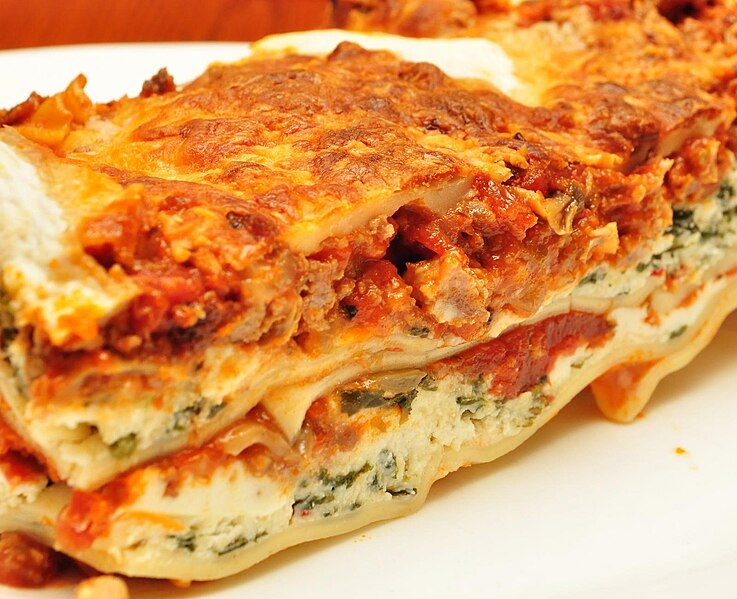

Lasagna Recipe
Home

Description:
Lasagna is a classic Italian dish made with layers of pasta, rich meat
sauce, creamy béchamel, and melted cheese. It's a hearty and comforting
meal that's perfect for family dinners or special occasions. This recipe
will guide you through making a delicious, homemade lasagna from scratch.
Ingredients:
For the Meat Sauce:
- 1 lb (450g) ground beef
- 1 lb (450g) ground pork (or substitute with more beef)
- 1 medium onion, finely chopped
- 3 garlic cloves, minced
- 1 can (28 oz/800g) crushed tomatoes
- 1 can (6 oz/170g) tomato paste
- 1 can (15 oz/425g) tomato sauce
- 1/2 cup (120ml) red wine (optional)
- 2 tsp dried basil
- 1 tsp dried oregano
- 1 tsp sugar
- Salt and pepper to taste
- 2 tbsp olive oil
For the Béchamel Sauce:
- 4 tbsp (60g) unsalted butter
- 1/4 cup (30g) all-purpose flour
- 4 cups (950ml) whole milk
- 1/4 tsp nutmeg
- Salt and pepper to taste
For Assembling:
-
12 lasagna noodles (oven-ready or boiled according to package
instructions)
- 2 cups (200g) shredded mozzarella cheese
- 1 cup (100g) grated Parmesan cheese
- Fresh basil or parsley for garnish (optional)
Steps to Make Lasagna:
Step 1: Prepare the Meat Sauce
- Heat olive oil in a large skillet or pot over medium heat.
-
Add the chopped onion and sauté until translucent (about 3-4 minutes).
- Add the minced garlic and cook for another minute.
-
Add the ground beef and pork, breaking it up with a spoon. Cook until
browned and no longer pink.
-
Stir in the crushed tomatoes, tomato paste, tomato sauce, red wine (if
using), basil, oregano, sugar, salt, and pepper.
-
Simmer the sauce on low heat for 30-40 minutes, stirring occasionally.
Adjust seasoning if needed.
Step 2: Make the Béchamel Sauce
- In a medium saucepan, melt the butter over medium heat.
-
Add the flour and whisk continuously for 1-2 minutes to create a roux.
- Gradually pour in the milk, whisking constantly to avoid lumps.
- Cook the sauce until it thickens (about 5-7 minutes).
-
Stir in the nutmeg, salt, and pepper. Remove from heat and set aside.
Step 3: Cook the Lasagna Noodles
-
If using regular lasagna noodles, cook them according to the package
instructions until al dente. Drain and set aside. (Skip this step if
using oven-ready noodles.)
Step 4: Assemble the Lasagna
- Preheat your oven to 375°F (190°C).
-
In a 9x13 inch baking dish, spread a thin layer of meat sauce on the
bottom.
- Place a layer of lasagna noodles over the sauce.
-
Spread a layer of béchamel sauce over the noodles, followed by a layer
of meat sauce.
- Sprinkle a handful of mozzarella and Parmesan cheese on top.
-
Repeat the layers (noodles, béchamel, meat sauce, cheese) until all
ingredients are used, finishing with a layer of cheese on top.
Step 5: Bake the Lasagna
- Cover the baking dish with aluminum foil and bake for 25 minutes.
-
Remove the foil and bake for another 15-20 minutes, or until the top is
golden and bubbly.
- Let the lasagna rest for 10-15 minutes before slicing.
Step 6: Serve
- Garnish with fresh basil or parsley if desired.
- Serve warm and enjoy your homemade lasagna!
This lasagna is rich, flavorful, and sure to impress. Pair it with a side
salad and garlic bread for a complete meal. Buon appetito!s
This recipe is quick, delicious, and perfect for any occasion!